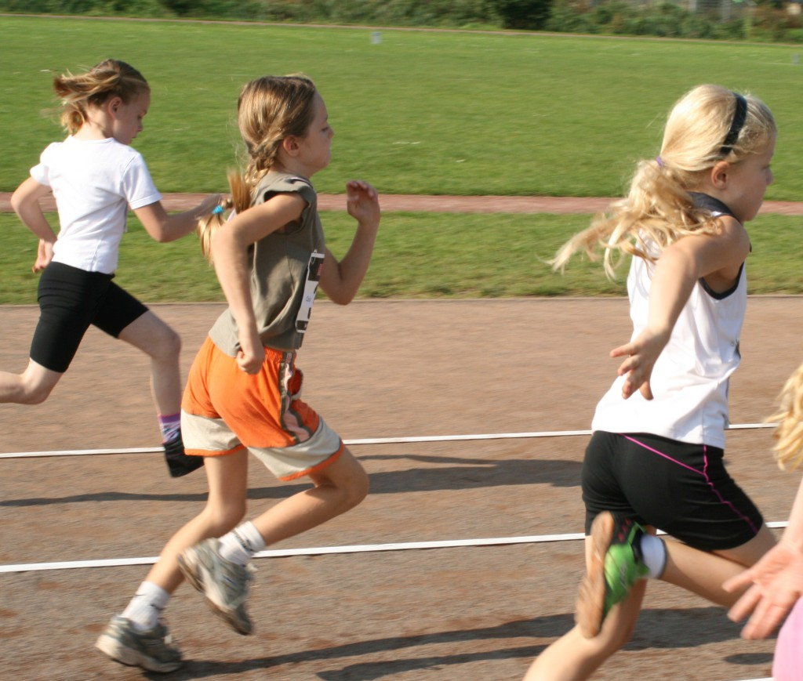

De afdeling jatletiek bestaat uit verschillende leeftijdsgroepen
met pupillen, junioren en senioren. De groepen zijn ingedeeld naar de
leeftijdscategorieën van de atletiekunie en worden begeleid door één of
twee vaste trainers. Alle atletiekonderdelen worden beoefend d.w.z.
sprinten, langere afstanden, verspringen, hoogspringen, kogelstoten,
speerwerpen, discuswerpen, hordelopen en estafette. Er wordt gezorgd
voor een gevarieerd trainingsaanbod, uiteraard aangepast aan het seizoen
en de leeftijd. Alle trainingen vinden plaats op of rond onze
atletiekbaan en bij slecht weer zal waar mogelijk uitgeweken worden naar
onze binnenruimte.
Het is mogelijk om vier keer op proef mee te trainen. Kom hiervoor langs op een training, of neem contact op met osm75jeugdatletiek@gmail.com voor meer informatie. Hopelijk tot binnenkort!
Elk jaar in september of oktober
organiseert de vereniging haar eigen clubkampioenschap. Ook kunnen
atleten deelnemen aan verschillende regionale indoor en outdoor
wedstrijden, zoals bijvoorbeeld de regionale pupillen- of junioren
competitie. Wedstrijd deelname is altijd onder begeleiding van een
trainer.
Like ook de OSM’75 jeugd pagina op facebook!
Vragen?
Stuur een bericht naar osm75jeugdatletiek@gmail.com

De groep jeugdleden van OSM’75 bestaat uit atleten vanaf 5 t/m 18 jaar. Ook neo-senioren (vanaf 19 jaar) en senioren (vanaf 23 jaar) zijn welkom bij de oudste jeugdgroep. Sommige jongens en meisjes zitten al vanaf de mini-pupillenleeftijd bij de vereniging, terwijl anderen pas net zijn begonnen met atletiek. Twee keer per week is er voor iedere leeftijdsgroep training.
De groepen
Kijk hieronder bij de sectie ‘Trainingstijden’ voor de recente tijden en groepsindeling.
Jaarlijkse groepswissel.
Begin november vindt de jaarlijkse groepswissel plaats. Dit betekent dat per 1 november iedereen doorschuift naar de volgende leeftijdscategorie. De indeling van de groepen is afhankelijk van het geboortejaar.
Jeugdtrainers
Zij
zijn het eerste aanspreekpunt voor u met betrekking tot afzeggen van de
training, vorderingen van uw kind, etc. Voor alle vragen kunt u bij hen
terecht.